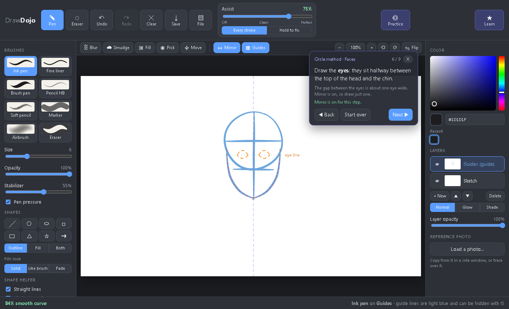
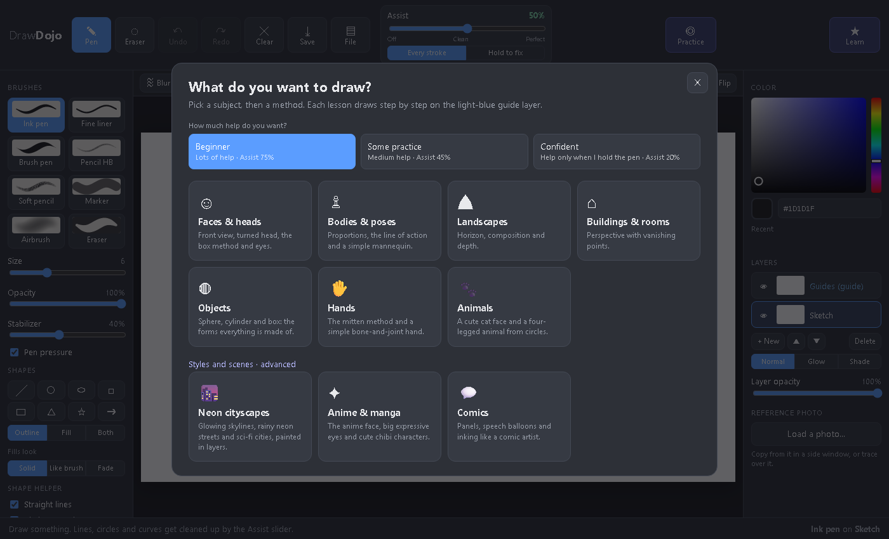
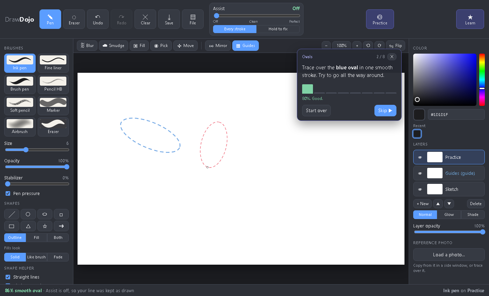

An Assist slider for your hand
Lift the pen and Draw Dojo works out what you meant: a line, circle, oval, curve, triangle, box, star. It moves your line toward the perfect shape by exactly as much as you choose. A faint ghost of the perfect shape and a score like "87% round" show how close you got, so you learn instead of just getting fixed.
Lessons that draw with you
Pick what you want to draw and a classic method. Each step shows where the next line goes, snaps your lines into place, and measures later steps from what you drew.
- Faces with the circle method, a turned head, the box method and the eye
- Bodies, hands, animals, landscapes, perspective and basic forms
- "Set up for me" picks the right brush, color and layer for each step

Paint glowing neon cities
The moody skyline style from art shorts, broken into simple steps: a fading sky, rows of building shapes from far to near, fog, lit windows, rain, reflections and glow. Plus anime faces, eyes and chibis, and comic pages with panels and inking.
- Fade fills for skies and fog, Glow layers for neon
- Every lesson comes with its own color palette

Watch yourself get better
Short drills (circles, straight lines between two dots, ovals, curves, boxes) with Assist switched off and a score for every try. Your results are kept, and when you're good at something, Draw Dojo suggests using less help.

Small on purpose
No brush engine with a hundred settings. Just the tools that help you learn, all visible, no menus to dig through.
Brushes that feel right
Ink pen, fine liner, brush pen, grainy pencils, marker, airbrush. Pen pressure and a stabilizer for shaky hands.
Shapes
Lines, circles, ovals, boxes, triangles, stars and arrows, as outline, fill or both.
A smart fill bucket
Sees your lines, closes small gaps, fills behind lines. Solid, like your brush, or as a fade.
Hold to pick
Hold the eraser on a line to delete it, hold a pen on a line to recolor it or on an empty area to fill it.
Move anything
Move, resize and turn a line or a whole group. Crossing lines stay whole.
Layers with glow
Normal, Glow and Shade blending, a light-blue guide layer for sketch lines, and mirror mode.
Zoom, turn, flip
Wheel to zoom, turn the page like real paper, flip the view to spot mistakes. Touch gestures too.
Reference photo
Copy from a see-through side window, or trace a faint photo under your drawing.
Never lose work
Autosave in your browser, project files that keep layers, PNG export, any page format.
Ready? Grab your pen.
Free forever, open source, no sign-up.
index.html.